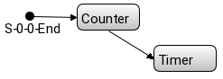
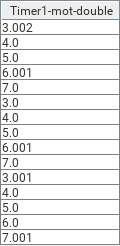
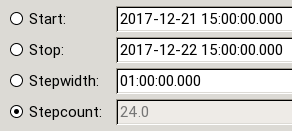
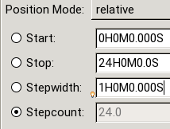
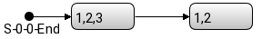
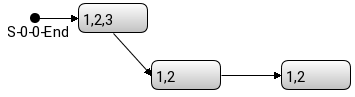

Virtual devices are devices which do not exist in reality. They just simulate a certain behavior. In eveCSS there are different types of virtual devices which are described in the following. A summary is given by the Virtual Devices Reference Page.
Instead of positions given by a translational/rotational movement by a physical device (or a heating/cooling process with temperatures) a virtual motor axis just emulates these positions with (calculated) values. Besides that there is no movement command send (and the delay until the axis has finished moving) there is no difference to a physical axis if used in a scan.
A Counter’s behavior depends on the chosen stepfunction. An Add/Multiply Counter starts with the Start value, calculates the next values based upon the given stepcount / stepfunction and finishes with the stop value. The value is propagated the time it is calculated.
It is also possible to use a counter in file / positionlist or range mode. Then the sequence of values are just the given values. Hence no values are calculated the (arrival) response will be almost immediate.
When using the Timer virtual device given values are interpreted as seconds elapsed since a certain reference point. The reference point varies depending on the chosen position mode.
In absolute position mode the values are the seconds elapsed since the start of the scan module, e.g. a start value of 2 means that two seconds after the start of the scan module the first measurement is made. The reported value is also 2.
In relative position mode the values are still the seconds elapsed since the start of the scan module but the reported value will be different since the start of the scan module is the time elapsed since the start of the scan (instead of zero). So a start value of 2 for example still means that two seconds after the start of the scan module the first measurement is made but the reported value depends on when the scan module is executed.

Given: A Scan Module with a Counter (1 to 3), a nested scan module with
Timer Start=3, Stop=7, Stepwidth=1 (absolute) ⇒ Stepcount=4 (calculated)
Motor positions: 3, 4, 5, 6, 7, 3, 4, 5, 6, 7, 3, 4, 5, 6, 7
Since the values are interpreted as absolute since the start of the scan module each iteration reports the same sequence of numbers.
Given: A Scan Module with a Counter (1 to 3), a nested scan module with
Timer Start=3, Stop=7, Stepwidth=1 (relative) ⇒ Stepcount=4 (calculated)
Motor positions: 3, 4, 5, 6, 7, 10, 11, 12, 13, 14, 17, 18, 19, 20, 21
The defined values are interpreted as relative to the time elapsed since the start of the scan until the start of the scan module, i.e. the second iteration of the scan module start immediately after the first iteration is done (at 7 seconds). Combined with the defined start value of three this leads to a value of 10 reported as the first value of the second iteration (and 17 for the third).
Keep in mind that due to a lack of a real time system and the representation in double precision the values could deviate!

The mSec Timer works like the Timer but the given values are (positive) integers interpreted as milliseconds.
Keep in mind that due to integer limitations the maximum duration of a scan using this timer is approximately 24 days.
T max = Integer.MAX_VALUE ms = (2 31 - 1) ms = 2147483647 ms = 24.86 d
The date Timer defines the start and stop values as dates (as in ISO 8601), the stepwidth as a duration (hours, minutes, seconds and milliseconds) and the stepcount as a double. In relative mode durations are used exclusively.
To do one measurement per hour on a specific time for 24 hours create a scan module with a date timer motor axis with the following settings:

To do one measurement per hour for 24 hours starting immediately when the scan is executed create a scan module with a date timer motor axis with relative position mode with the following settings:

Virtual detector channels return calculated values instead of values received from remote devices. They can be used for instance to add „markers” to the data file, e.g. timestamps or the current scan module.
SM-Counter counts the number of scan modules executed. A return value of i means that i-1 scan modules were already executed and the i-th one is currently executed. Keep in mind that each execution is counted, i.e. a nested scan module is counted each time it is executed.
There are rumours that certain UI tools use this information to divide a scan into subplots.
Imagine the following scan with two appended scan modules. The first contains a counter from one to three, the second a counter from one to two and both containing the sm counter detector:

The reported values for the sm counter would be: 1, 1, 1, 2, 2. When the first scan module is executed it is counted (sm counter equals 1). As long as it is executing (three measurements) the counter remains 1. When the second scan module starts sm counter is incremented and reported for each measurement (two times).

The Timer returns the number of seconds (in double precision) elapsed since the start of the scan.
The msec Timer’s behavior is analog to the (sec) Timer. The only difference is that its unit is milliseconds and its data type is integer.
The date Timer channel returns a string containing a timestamp specified in ISO 8601. Its format is YYYY-MM-DDThh:mm:ss.sTZD (e.g. 2017-10-16T15:53:10.050+02:00). For more information on ISO 8601 see ISO 8601 (with costs) or Date and Time Formats (W3C).